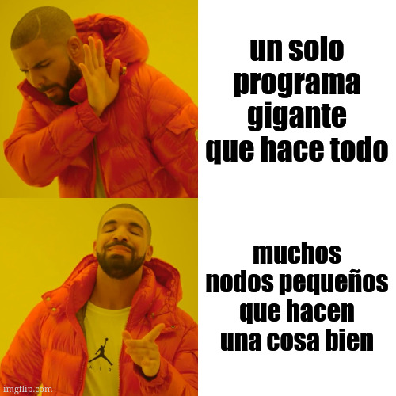
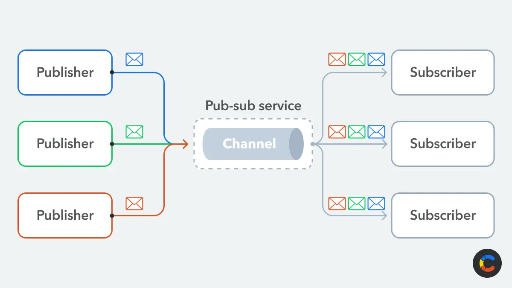

Robótica
Clase 02
Semana 2 - 03/31/2026
Robot Operating System (2)
Es un conjunto de librerías de software y herramientas que ayudan a la creación de aplicaciones robóticas (SDK)
Proporciona los componentes básicos necesarios para alcanzar los objetivos más rápidamente

www.ros.org
Robot Operating System (2)
Problemas que resuelve
El problema de La torre de babel
- Problema de comunicación entre distintos elementos (sensores, actuadores, algoritmos, etc.)
- ROS2 proporciona una forma estándar para que se comuniquen entre sí.
Robot Operating System (2)
Problemas que resuelve
El problema de “Reinventar la rueda”
- ROS2 proporciona paquetes para tareas comunes
- Permite focalizar el desarrollo en los objetivos específicos del proyecto
Robot Operating System (2)
Problemas que resuelve
El problema del “caos del hardware”
- ROS2 abstrae el hardware generando capas
- Las aplicaciones de alto nivel están separadas de las de bajo nivel
Robot Operating System (2)
Otras características (no menores):
- Plataforma estándar y comunidad global
- Utilizado en educación, investigación e industria
- Multi-dominio y multi-plataforma
- Gratuito y open-source
Robot Operating System (2)
Aplicaciones en el mundo real
Robótica Móvil Autónoma (AMR)


Robot Operating System (2)
Aplicaciones en el mundo real
Drones y tractores en agricultura

Robot Operating System (2)
Aplicaciones en el mundo real
Exploración del espacio

ROS 2 Graph
Nodos
Programa único e independiente que realiza una tarea específica
Un sistema robótico completo se compone de múltiples nodos
Ejemplo: robot aspiradora
- Nodo A: sensor de obstáculos
- Nodo B: seguir el recorrido
- Nodo C: controlar las ruedas

ROS 2 Graph
Nodos
Se compila, ejecuta y gestiona de forma individual
Se organiza en paquetes y ejecutables que pueden contener más de un nodo
Un nodo se comunica con otros nodos, que pueden estar dentro del mismo proceso, en otro o incluso en otro dispositivo
ROS 2 Graph
3 modos de comunicación
- Topics ⬅️
- Servicios
- Acciones
ROS 2 Graph
Topics
Transmisión de datos continua en una única dirección entre nodos
- Analogía: estación de radio
- 1 publicador: productores de datos
- N suscriptores: consumidores de datos

ROS 2 Graph
Topics
Publicador / Suscriptor
Al crear un publicador se le asigna un nombre de topic al cual va a publicar
Para suscribirse se deberá utilizar el mismo nombre
En un topic puede haber cero o muchos publicadores y cero o muchos suscriptores
Un nodo puede suscribirse a múltiples topics y publicar en múltiples topics, todo a la vez
ROS 2 Graph
Topics
Anónimo
- Cuando un suscriptor recibe mensajes desconoce quién los produjo
- Ventaja: publicadores y suscrptores pueden intercambiarse sin afectar el sistema
- Los publicadores y suscriptores pueden aparecer y desaparecer de forma dinámica
- Desventaja: hace falta inspeccionar y depurar en vivo
Fuertemente tipado
- Cómo definimos los tipos?
ROS 2 Graph
3 interfaces (asociadas a los modos de comunicación)
- Mensajes (
.msg) ⬅️ - Definiciones de servicio (
.srv) - Definiciones de acciones (
.action)
ROS 2 Graph
Mensajes
Mecanismo para enviar información donde no se espera una respuesta
Lenguaje de Definición de Interfaz (IDL)
- Lenguaje simplificado
- Permite generar código de forma automática
- Archivos
.msgcon múltiples campos y/o constantes
ROS 2 Graph
Archivos .msg
Campos:
tipo+nombre
Constantes:
tipo+NOMBRE=valor
- 2 tipos de campo
- built-in (predefinidos)
- Otro mensaje (mensaje que contiene otro mensaje)
ROS 2 Graph
Archivos .msg
Tipos built-in (algunos)
| Nombre | C++ | Python |
|---|---|---|
| bool | bool | builtins.bool |
| char | char | builtins.int |
| float32 | float | builtins.float |
| float64 | double | builtins.float |
| int8 (*) | int8_t | builtins.int |
| uint8 (*) | uint8_t | builtins.int |
| string | std::string | builtins.str |
ROS 2 Graph
Archivos .msg
Mensajes anidados
ROS 2 Graph
- El grafo de nodos es un “mapa” de todas los nodos y las lineas que los conectan
- Representación visual
- la información fluye a traves de lineas específicas (“topics”) de un nodo a otro.
- Está diseñado para que los nodos no necesiten saber de donde viene la información
ROS 2 Graph

Nombres y namespace
Nombres jerárquicos que identifican todos los elementos de ROS
Permiten
- Organizar sistemas complejos
- Evitar conflictos de nombres
- Encapsulamiento (aislar componentes)
- Reutilización de código
Nombres y namespace
Similar a una estructura de carpetas
Tipos
Global
- Inician con
/ - Se consideran resueltos
- No dependen del namespace
- Inician con
Nombres y namespace
Similar a una estructura de carpetas
Tipos
Global
Relativo
- No inician con
/ - Se resuelve dentro del namespace del nodo
- No inician con
Nombres y namespace
Similar a una estructura de carpetas
Nombres y namespace
Similar a una estructura de carpetas
Tipos
Global
Relativo
Base
Privado
- Inician con
~ - Utiliza el nombre del nodo como namespace
- Inician con
Intro línea de comandos
Ubuntu: 3 elementos principales
- Kernel: Linux
- Entorno de escritorio: GNOME
- Gestor de paquetes: Advanced Package Tool
Intro línea de comandos
Terminal: ejecución de programas mediante comandos
Ejemplos:
- Navegar por el árbol de directorios
- Crear, leer, editar y organizar archivos
- Ejecutar otros programas
- Gestionar recursos del sistema
Intro línea de comandos
Comandos: instrucciones que se interpretan y ejecutan programas 1
Estructura
$ <comando> --<opcion1> -<opcion2> <argumento>
Opción estándar --help muestra la ayuda
Intro línea de comandos
Controles más comunes
Enter: ejecutar el comandoCtrl-C: cerrar programas en ejecuciónShift + Ctrl-C: copiar contenido seleccionadorShift + Ctrl-V: pegar del portapapelesTab: autocompletar
Intro línea de comandos
Controles más comunes
Bash almacena todo los comandos ejecutados en un historial 1
Flecha ⬆️oFlecha ⬇️: navegar por el historial
No hay Ctrl+Z o Deshacer al ejecutar comandos. Si se sobreescribe o eliminan archivos no se puede deshacer
Intro línea de comandos
Prompt 1 |
user@hostname:~$


Fuente: Mozilla Developer Network
Intro línea de comandos
Algunos comandos
pwd |
Mostrar el PATH actual | pwd |
ls |
Listar los elementos en la ubicación actual | ls -la |
cd |
Cambiar de carpeta | cd Documentos |
cat |
Mostrar el contenido de un archivo | cat archivo.txt |
touch |
Crear un archivo (si no existe) | touch nuevo.txt |
mkdir |
Crear una carpeta | mkdir nueva_carpeta |
cp |
Copiar un archivo o carpeta | cp origen.txt copia.txt |
mv |
Mover (o renombrar) un archivo o carpeta | mv archivo.txt carpeta/ |
rm |
Eliminar un archivo | rm archivo.txt |
rmdir |
Eliminar una carpeta | rmdir carpeta_vacia |
clear |
Limpiar la consola | clear |
Intro línea de comandos
Path: ruta de archivo, nombre de ruta
Manipulación del PATH
/ |
Directorio raíz en un sistema Linux | ls /dev/tty* |
. |
Directorio actual | mkdir ./workspace |
.. |
Directorio padre | cd ../../media |
~ |
Directorio home del usuario | cd ~/Documents |
| Mayúsculas/minúsculas | Linux distingue entre mayúsculas y minúsculas | cd ~/Documents ≠ cd ~/documents |
Intro línea de comandos
Variables de entorno
Configuración del sistema en que un programa se ejecuta
env |
Listar todas las variables de entorno | env |
$ |
Acceder a la variable | echo $<nombre_var> |
export |
Crear una variable nueva | export <nombre>=<valor> |
~/.bashrc |
Archivo de configuración para comandos de usuario |
Intro línea de comandos
Procesos
Los procesos son programas en ejecución
Tienen asignado un “Identificar de proceso” (
PID)
ps |
Listar los procesos | ps -e |
kill |
Forzar el cierre un proceso | kill <PID> kill -9 <PID> |
Intro línea de comandos
Gestionar los paquetes
apt
| Actualizar el índice de paquetes | apt update |
| Instalar paquetes | sudo apt install <paquete> |
| Instala nuevas vestiones de paquetes | sudo apt upgrade |
| Listar paquetes | apt list |
Laboratorio
- Instalación de ROS2
- Emisor / Receptor
- Comandos para análisis de nodos, topics y mensajes